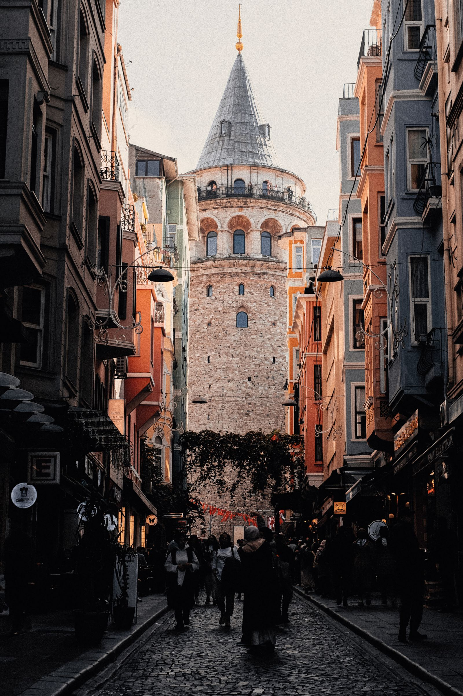

Gezi
İstanbul’da Bir Gün: Sokaklar, Hikâyeler ve Notlar
26 Temmuz 2026
Şehrin kalabalığına karışıp küçük ayrıntıların peşine düştüğüm bir gün. Sokaklardan, insanlardan ve yol boyunca biriktirdiğim notlardan geriye kalanlar...
DEVAMINI OKU